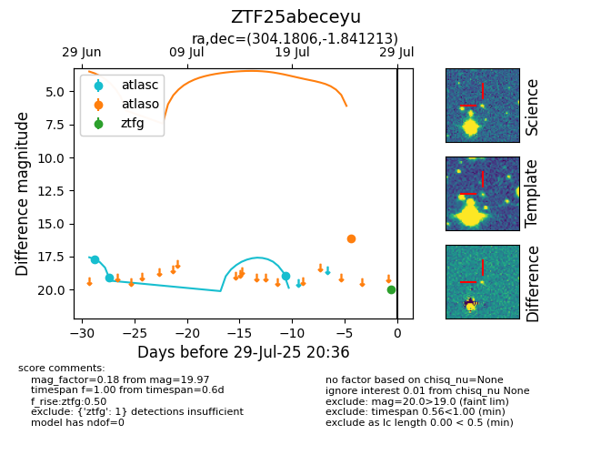

Target ZTF25abeceyu at 2025-07-29 20:36, see:
FINK: fink-portal.org/ZTF25abeceyu
Lasair: lasair-ztf.lsst.ac.uk/objects/ZTF25abeceyu
ALeRCE: alerce.online/object/ZTF25abeceyu
alt names
ZTF25abeceyu (ztf,fink)
coordinates:
equatorial (ra, dec) = (304.1806,-1.84121)
galactic (l, b) = (41.3092,-19.75985)
photometry
last atlasc=18.99, atlaso=16.17, ztfg=19.97
3 atlasc, 1 atlaso, 1 ztfg detections
